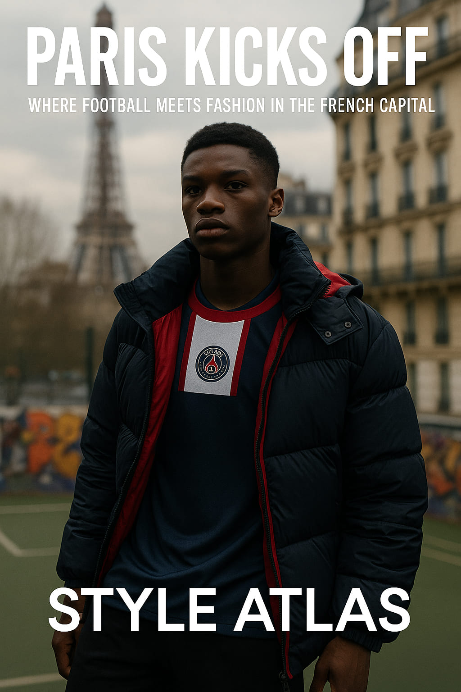
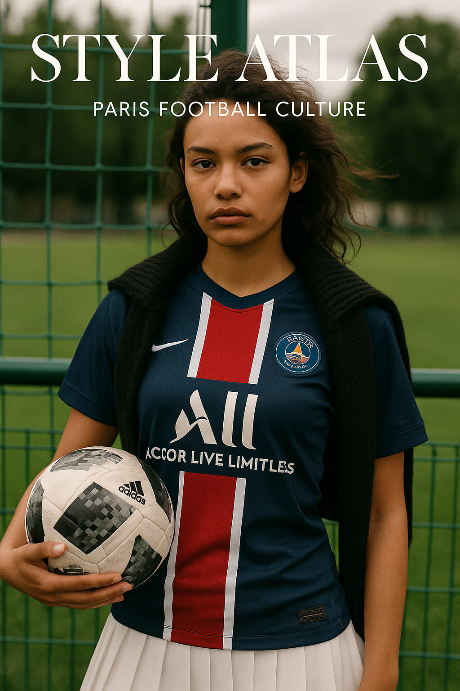
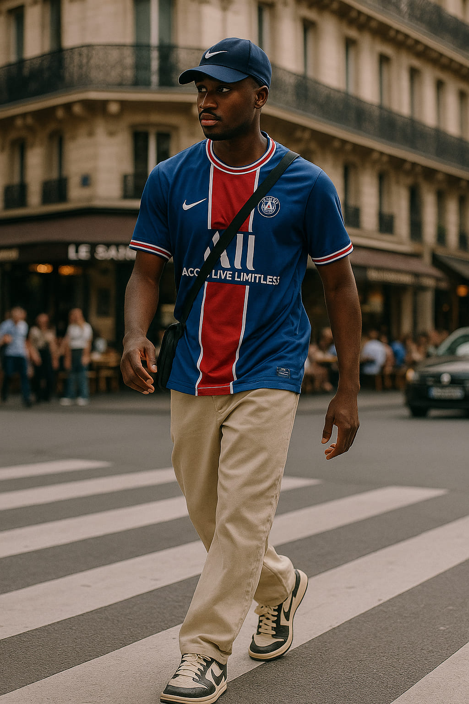
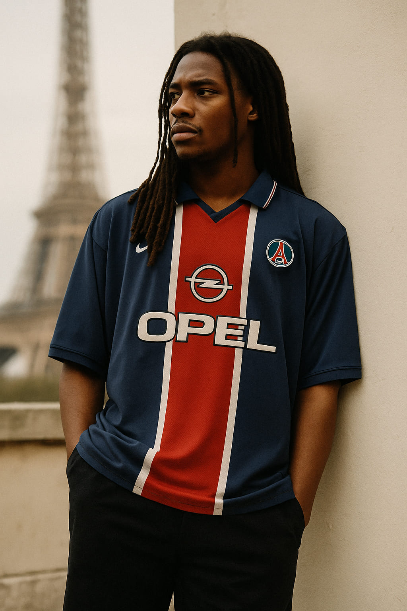
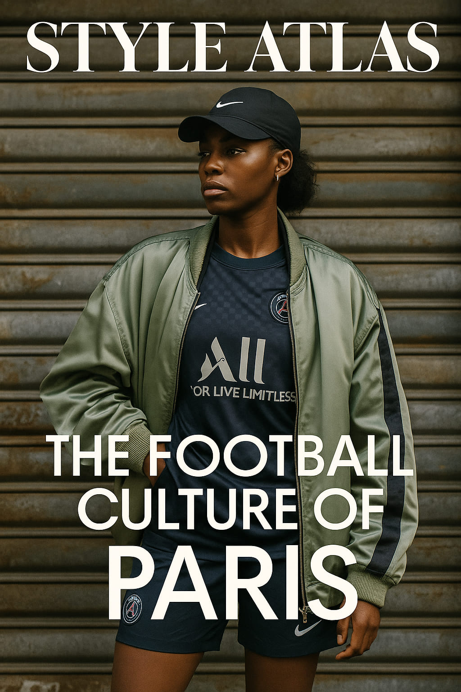

Paris Kicks Off: Where Football Meets Fashion in the French Capital
Paris is a city where elegance walks hand in hand with rebellion. Nowhere is this more visible than in the intersection of football and fashion. From concrete courts in the suburbs to the glistening Parc des Princes, the city’s football culture has birthed a visual language that’s unmistakably Parisian: stylish, defiant, and laced with identity.
“Football in Paris isn’t just played—it’s worn.”
Streets Before Stadiums
Unlike other capitals where football culture is tied tightly to tradition, Paris makes room for reinvention. Suburban districts like Saint-Denis, Montreuil, and Bobigny are incubators of street football style—an aesthetic that fuses Nike kits with puffer vests, gold chains, and beat-up Sambas.
The courts of Paris aren’t just practice grounds; they’re catwalks. From concrete-floored cages in Pigalle to urban murals in the 18th arrondissement, players know they’re being watched—for their moves and their fits. And the look? It's gritty and slick, just like the game.
PSG: From Local Club to Global Symbol
No club encapsulates this visual revolution more than Paris Saint-Germain. With fashion-forward collabs with Jordan Brand and statement-making kits, PSG has positioned itself at the crossroads of luxury and streetwear. Wearing the jersey on the street isn’t fandom—it’s fashion.
Walk through Le Marais or Belleville, and you’ll spot the PSG crest more often than a Louis Vuitton logo. It's worn by teenagers, stylists, baristas, and rappers alike. It’s become a cultural passport—belonging to a city that’s always been beautifully complex.
The Sneaker Scene: Samba, Air Max, and Identity
If there's one thing uniting Parisian football style, it's the footwear. Adidas Sambas, Air Max 90s, Puma Suedes—worn until they're perfectly scuffed. Footballers here don’t switch to sneakers after the game; they wear them to the pitch, through the city, to the club.
Sneakers in Paris carry memory. A muddy sole speaks of a match in the rain; creased leather tells of nights on the metro after pickup games. The lines between athlete and pedestrian blur here—and it’s all part of the charm.
Football and the Banlieues: The Real Style Icons
Much of Paris’ football culture stems from the banlieues—outer suburban areas often stereotyped but filled with creativity, resilience, and fierce identity. Players like Kylian Mbappé, born in Bondy, carry not just the dreams of a nation but the style of a generation.
In these neighborhoods, football fashion is personal. Scarves are worn differently. Shorts hang looser. And track jackets? Always zipped just enough to show the jersey beneath.
When Luxury Looks to the Pitch
Fashion houses have taken notice. Dior sponsored PSG. Balmain showcased bomber jackets inspired by team warm-ups. And brands like Kappa and Umbro have been reborn as retro-chic on Parisian runways.
The idea that football is lowbrow? Long gone. In Paris, football is the muse. Designers reference jerseys in their silhouettes, incorporate field textures in fabric choices, and pull entire color palettes from club kits.
Where to See It All
- Playground Duperré in Pigalle — Football and fashion collide under floodlights and graffiti.
- Canal Saint-Martin — Where Sunday games turn into style spotting.
- Les Halles — Skaters and ballers mix, each wearing their tribe’s uniform.
Conclusion: Paris Owns the Pitch—and the Look
In Paris, football isn’t separate from style—it is style. The city dresses the game like it dresses itself: with layers, nonchalance, and a bit of rebellion. Whether you’re in the stands at Parc des Princes or kicking a ball behind a metro station, you’re part of a sartorial legacy that’s global, visual, and unmistakably Parisian.
“Football style in Paris is not copied from elsewhere. It’s lived, every day, on every block.” — Simulated GQ France source
Words by Style Atlas